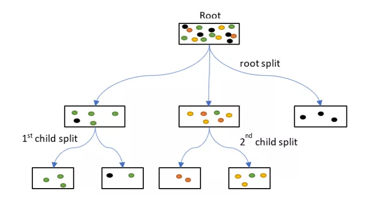

1 ML
Discriminant Analysis
- Not a ML algorithm, but I don’t really have a good place to put it.
- Misc
- Packages
- {MASS::lda}
- Assumes Multivariate Normality of features
- {MVN} (Vignette) - Tests for multivariate normality
- Contains the three most widely used multivariate normality: Mardia’s, Henze-Zirkler’s and Royston’s
- Graphical approaches, including chi-square Q-Q, perspective and contour plots.
- Two multivariate outlier detection methods, which are based on robust Mahalanobis distances
- {MVN} (Vignette) - Tests for multivariate normality
- Comparison with other statistical models
- Sort of a backwards MANOVA, i.e. categorical ~ continuous instead of continuous ~ categorical
- Interpretation similar to PCA
- Assumptions similar to both MANOVA and PCA
- Very fast even on a 1M row dataset
- Packages
- Linear Discriminant Analysis (LDA)
Notes from StatQuest: Linear Discriminant Analysis (LDA) clearly explained video
Goal is find an axis (2 dim) for a binary outcome or plane (3 dim) for a 3-category outcome, etc. that separates the predictor data which is grouped by the outcome categories.
How well the groups are separated is determined by projecting the points on this lower dim object (e.g. axis, plane, etc.) and looking at these criteria:
- Distance (d) between the means of covariates (by outcome group) should be maximized
- Scatter (s2) ,i.e. variation, of data points per covariate (by outcome group) should be minimized
Maximizing the ratio of Distance to Scatter determines the GoF of the separator
.png)
- Figure shows a example of a 2 dim predictor dataset that been projected onto a 1 dim axis. Dots are colored according to a binary outcome (green/red)
- In the binary case, the difference between the means is the distance, d.
For multinomial outcomes, there are a couple differences:
- A centroid between all the predictor data is chosen, and centroids within each category of the grouped predictor data are chosen. For each category, d is the distance between the group centroid and the overall centroid
.png)
- The chosen group predictor centroids are determined by maximizing the distance-scatter ratio
- Using the coordinates of the chosen group predictor centroids, a plane is determined.
.png)
- For a 3 category outcome, 2 axes (i.e. a plane) are determined which will optimally separate the outcome categories
- A centroid between all the predictor data is chosen, and centroids within each category of the grouped predictor data are chosen. For each category, d is the distance between the group centroid and the overall centroid
By looking at which predictors are most correlated with the separator(s), you can determine which predictors are most important in the discrimination between the outcome categories.
The separation can be visualized by using charting the data according to the separators
.png)
- Example shows the data is less overlap between black and blue dots and therefore grouped better using LDA than PCA.
Example: Site classification given the morphological measurements of california pitcher plants (source)
Automatic Leave-One-Out cross-validation is available using cv = TRUE
You can specify a training set with a row index vector in the subset argument
library(dplyr) url <- "https://raw.githubusercontent.com/jon-bakker/appliedmultivariatestatistics/main/Darlingtonia_GE_Table12.1.csv" darl_dat_raw <- readr::read_csv(url, col_select = -plant) darl_dat_proc <- darl_dat_raw |> mutate(across(where(is.numeric), scale)) da_mod <- MASS::lda(site ~ ., data = darl_dat) da_mod #> Prior probabilities of groups: #> DG HD LEH TJH #> 0.2873563 0.1379310 0.2873563 0.2873563 #> #> Group means: #> height mouth.diam tube.diam keel.diam wing1.length wing2.length wingsprea hoodmass.g tubemass.g wingmass.g #> DG 0.03228317 0.34960765 -0.64245369 -0.3566764 0.3998415 0.2997874 -0.2093847 0.4424329 0.30195655 0.03566704 #> HD -0.41879232 -1.37334175 0.93634832 1.3476695 -0.8102232 -0.3184490 -0.1996899 -1.1498678 -1.05297022 -0.28283531 #> LEH 0.22432324 0.25108333 0.23567347 -0.4189580 0.5053448 0.3853959 0.6919511 -0.1754338 0.07558687 0.23585050 #> TJH -0.05558610 0.05851306 -0.04266698 0.1287530 -0.5162792 -0.5323277 -0.3867152 0.2849374 0.12788229 -0.13575660 #> #> Coefficients of linear discriminants: #> LD1 LD2 LD3 #> height 1.40966787 0.2250927 -0.03191844 #> mouth.diam -0.76395010 0.6050286 0.45844178 #> tube.diam 0.82241013 0.1477133 0.43550979 #> keel.diam -0.17750124 -0.7506384 -0.35928102 #> wing1.length 0.34256319 1.3641048 -0.62743017 #> wing2.length -0.05359159 -0.5310177 -1.25761674 #> wingsprea 0.38527171 0.2508244 1.06471559 #> hoodmass.g -0.20249906 -1.4065062 0.40370294 #> tubemass.g -1.58283705 0.1424601 -0.06520404 #> wingmass.g 0.01278684 0.0834041 0.25153893 #> #> Proportion of trace: #> LD1 LD2 LD3 #> 0.5264 0.3790 0.0946- Prior probabilities of groups: By default, they’re set the proportions of the observed data, but they can be specified within the model function
- These probabilities are weights in the calculations of a DA: the higher the probability, the more weight a group is given
- Group means: The mean value of each variable in each group (note whether standardized or unstandardized
- Coefficients of linear discriminants: Roughly analogous to the loadings produced in a PCA.
- Standardizing during preprocessing allows you to compare the LD coefficients directly among variables.
- Larger coefficients (either positive or negative) indicate variables that carry more weight with respect to that LD.
- The coefficients of linear discriminants – an eigenvector – would be multiplied by the corresponding variables to produce a score an individual observation on a particular LD.
- Proportion of trace: The proportion of variation explained by each LD function (eigenvalue). Note that these always sum to 1, and are always in descending order (i.e., the first always explains the most variation).
da_mod_preds <- predict(da_mod) head(round(da_mod_preds$posterior, 2)) #> DG HD LEH TJH #> 1 0.77 0.00 0.00 0.23 #> 2 0.21 0.00 0.04 0.75 #> 3 0.15 0.03 0.55 0.27 #> 4 0.46 0.00 0.02 0.53 #> 5 0.67 0.00 0.06 0.27 #> 6 0.42 0.00 0.01 0.57 (da_mod_conf <- table(darl_dat_proc$site, da_mod_preds$class)) #> DG HD LEH TJH #> DG 18 0 2 5 #> HD 0 11 1 0 #> LEH 3 0 21 1 #> TJH 2 0 3 20 sum(diag(da_mod_conf))/sum(da_mod_conf) * 100 #> [1] 80.45977- darl_preds$posterior are the predicted probabilities for each class
- Using the values from the confusion matrix, we can calculate the accuracy which is 80%
- Prior probabilities of groups: By default, they’re set the proportions of the observed data, but they can be specified within the model function
Support Vector Machines

- Misc
- Packages:
- {e1071}, {kernlab}, {LiblineaR}, {{sklearn}}
- {maize} - An extension library for support vector machines in tidymodels that consists of additional kernel bindings listed in {kernlab} that are not available in the {parsnip} package
- {parnsip} has three kernels available: linear, radial basis function, & polynomial. {maize} currently adds five more kernels: laplace, bessel, anova rbf, spline, & hyperbolic tangent.
- Also see
- Model Building, tidymodels >> Model Specification >> Support Vector Machines
- Model Building, sklearn >> Misc >> Tuning
- Packages:
- Process
- Works on the principle that you can linearly separate a set of points from another set of point simply by transforming the dataset from dimension n to dimension n + 1.
- The transformation is made by a feature transformation function, φ(x). For two dimensions, a particular φ(x) might transform the vector, x = {x₁, x₂}, which is in 2 dimensions, to {x²₁, √(2x₁x₂), x²₂}, which is 3 dimensions
- Transforming a set of vectors into a higher dimension, performing a mathematical operation (e.g. dot product), and transforming the vectors back to lower dimension is involves many steps and therefore is computationally expensive.
- The problem can become computationally intractable fairly quickly. Kernels are able perform these operations in much fewer steps.
- Creates a hyperplane at a threshold that is equidistant between classes of the target variable
- Edge observations are called Support Vectors and the distance between them and the threshold is called the Maximum Margin
- Works on the principle that you can linearly separate a set of points from another set of point simply by transforming the dataset from dimension n to dimension n + 1.
- Kernels
Gaussian Kernel aka Radial Basis Function (RBF) Kernel
\[ K(x,y) = e^{-\gamma \lVert x - y \rVert^2} \]
\(K(x,y)\) performs the dot product in the higher dimensional space without having to first transform the vectors
Advantages
- Can model complex, non-linear relationships
- Works well when there’s no prior knowledge about data relationships
- Effective in high-dimensional spaces
Challenges
- Choosing an appropriate \(\gamma\) value (often done through cross-validation)
- Can be computationally expensive for large datasets
Polynomial Kernel
\[ K(x,y) = (\alpha \cdot x^Ty + c )^d \]
- \(x^T y\) is the dot product of \(x\) and \(y\)
- \(\alpha\) is a scaling parameter (often set to 1)
- \(c\) is a constant term that trades off the influence of higher-order versus lower-order terms
- When \(c \gt 0\), it allows the model to account for interactions of all orders up to \(d\)
- When \(c = 0\), it’s called a homogeneous polynomial kernel
- \(d\) is the degree of the polynomial
- Controls the flexibility of the decision boundary
- Higher \(d\) allows modeling of more complex relationships
- Advantages
- Can model feature interactions explicitly
- Works well when all training data is normalized
- Computationally less expensive than RBF kernel for low degrees
- Challenges
- Choosing appropriate values for \(d\) and \(c\)
- Can lead to numerical instability for large \(d\)
- May overfit for high degrees, especially with small datasets
- Hyperparameters
- gamma – All the kernels except the linear one require the gamma parameter. ({e1071} default: 1/(data dimension)
- coef0 – Parameter needed for kernels of type polynomial and sigmoid ({e1071} default: 0).
- cost – The cost of constraints violation ({e1071} default: 1)—it is the ‘C’-constant of the regularization term in the Lagrange formulation.
- C = 1/λ (R) or 1/α (sklearn)
- When C is small, the regularization is strong, so the slope will be small
- degree - Degree of the polynomial kernel function ({e1071} default: 3)
- epsilon - Needed for insensitive loss function (see Regression below) ({e1071} default: 0.1)
- When the value of epsilon is small, the model is robust to the outliers.
- When the value of epsilon is large, it will take outliers into account.
- nu - For {e1071}, needed for types: nu-classification, nu-regression, and one-classification
- Regression
- Stochastic Gradient Descent is used in order minimize MAE loss
- Also see
- Model building, sklearn >> Stochaistic Gradient Descent (SGD)
- Loss Functions >> Misc >> Mean Absolute Error (MAE)
- Also see
- Epsilon Insensitive Loss - The idea is to use an “insensitive tube†where errors less than epsilon are ignored. For errors > epsilon, the function is linear.
- Epsilon defines the “width†of the tube.
- See Loss Functions >> Huber loss for something similar
- Squared Epsilon Insensitive loss is the same but becomes squared loss past a tolerance of epsilon
- L2 typically used the penalty
- In SVM for classification, “margin maximization†is the focus which is equivalent to the coefficient minimization with a L2 norm. For SVR, usually the focus is on “epsilon insensitive.”
- Stochastic Gradient Descent is used in order minimize MAE loss
- Visualization
- Decision Boundary
Example
# Create a grid of points for prediction x1_grid <- seq(min(data$x1), max(data$x1), length.out = 100) x2_grid <- seq(min(data$x2), max(data$x2), length.out = 100) grid <- expand.grid(x1 = x1_grid, x2 = x2_grid) predicted_labels <- predict(svm_model, newdata = grid) plot(data$x1, data$x2, col = factor(data$label), pch = 19, main = "SVM Decision Boundary") points(grid$x1, grid$x2, col = factor(predicted_labels), pch = ".", cex = 1.5) legend("topright", legend = levels(data$label), col = c("red", "blue"), pch = 19)- (Legend colors in the wrong order)
- x1_grid and x2_grid provide equally spaced points within the range of sample data.
- grid is a df of all combinations of these points
- The predicted labels from [grid] are colored and visualize the decision boundary.
- {e1071} provides a plot function that also does this:
plot(svm_model, data = data, color.palette = heat.colors)
- Decision Boundary
1.1 Trees
Algorithmic models that recursively split the data into smaller and more homogeneous subgroups. Predictions are the same for every member of the subgroup (aka piece-wise constant). Forests smooth out the piecewise predictions by averaging over groups of trees.
How Tree models get probabilities
- Method 1: Each tree predicts the class of x according to the leaf node x falls within. The leaf node output is the majority class of the training points it contains. The predictions of all trees are considered as votes, and the class with the most votes is taken as the output of the forest. This is the original formulation of random forests proposed by Breiman (2001).
- Method 2: Each tree outputs a vector [p1,…,pk], where k is the number of classes, representing the predicted probability of each class given x. This may be estimated as the relative class frequencies of training points in the leaf node x falls within. The forest output is the average of these vectors across trees, representing a conditional distribution over classes given x.
- Example: Data point falls into a tree’s leaf where yellow is the predicted class (2nd child split) 
- For this tree in the ensemble, there are 3 yellow and 1 green in the terminal leaf (2nd child split). Therefore the probability of Yellow is 75%.
- For each class, the trees that predict that class have their probabilites averaged to produced the predicted probability for that class.
1.1.1 Decision Trees
- Misc
- PCA improves DT predictive performance in two important ways (py example):
- Orients key features together (that explain the most variance)
- DTs create orthogonal decision boundaries and PCs are orthogonal to each other.
- Reduces the feature space
- Orients key features together (that explain the most variance)
- PCA improves DT predictive performance in two important ways (py example):
- Classification
Showing entropy but misclassification error or the gini index can be used.
Calculate Shannon Entropy of dependent variable (Y):
where P(Y) is the marginal probabilityFor a binary variable, this would be

In general the Shannon Entropy equation is
 where p is a probability and c is the number of classes for the variable and S = subset of data or the node.
where p is a probability and c is the number of classes for the variable and S = subset of data or the node.Probabilities are between (0,1) and taking a log of numbers in this interval produces a negative value. Hence, the negative at the beginning of the expression.
If the natural log, ln, is used then it’s called deviance
Calculate the entropy of the target, Y, with respect to each independent variable, x. For variable,
, with number of classes, c :

I do NOT like the way the equation is written above. In videos, this type of entropy isn’t given a name, but I think it matches conditional entropy in its description and calculation.
- Conditional Entropy (for a particular x),

- This definition uses

- Where H is used to as the symbol for entropy.
- This definition uses
- Conditional Entropy (for a particular x),
-
- The marginal probability for that class of that variable, i.e. ratio of instances of that class in the entire dataset.
Example:

- Not explicitly shown above, but for the entropy calculations, it uses the sum of the rows as the denominator in probability calculations. This fits with a “conditional†type of entropy.
Calculate information gain for variable

- Repeat for all independent variables
Select the independent variable with the largest gain for first split (
- First split, i.e. root node, is the most influential variable
If categorical variable chosen, leaves are all levels of that variable
- Subset dataset by var == level (for each branch
- Repeat entropy and information gain calculations on the subsetted data set
- Branches with entropy > 1 are split unless some other stopping criteria is reached
- Choose variable with largest information gain and split by that variable
- Keeping repeating until maxdepth reached or minimum node size (number of rows in subset) reached
Numerical vars are binned and treated like categorical vars
Predicted class is the mode of the classes in the appropriate terminal node
- Regression
- For each predictor var, choose a separator value, s
- e.g var1 > 5 and var1 <= 5 where s = 5
- Calculate the mean y value for both regions then calculate the MSE ((obs - mean)^2) of both regions. Sum of both MSEs. The optimal separator produces the lowest sum MSE.
- Whichever predictor has lowest sum MSE is chosen as the split variable.
- Recursively repeat. For example, repeat on region where var1 >5 and repeat on region where var1 <= 5.
- Continue until max.depth, max splits reached or data points in created region is less than a minimum or MSEs being calculated are all greater than a chosen amount, or… etc. (Hyperparameters)
- Prediction is the mean in the appropriate terminal node
- For each predictor var, choose a separator value, s
1.1.2 Random Forest

- Several independent decision trees are fit. Each tree uses sampled-with-replacement (bootstrapped) data. At each node within the tree, the outcome space is split according to a random subset of features (mtry) in \(X\). Predictions are averaged or chosen by majority vote.
- When we ‘’drop down’’ a new point \(x\), it will end up in a leaf for each tree. A leaf is a set with observations \(i\) and taking the average over all \(y_i\) in that leaf gives the prediction for one tree. These predictions are then averaged to give the final result. Thus, for a given \(x\) if you want to predict the conditional mean of \(Y\) given that \(x\), you:
- “Drop down†the \(x\) each tree (this is indicated in red in the above figure). Since the splitting rules were made on \(X\), your new point \(x\) will safely land somewhere in a leaf node.
- For each tree you average the responses \(y_i\) in that leaf to get an estimate of the conditional mean of each tree.
- You average each conditional mean over the trees to get the final prediction.
- Averaging the prediction of all trees leads to a marked reduction in variance.
- Packages
- {sirus}: Stable and Interpretable Rule Set
- Combines the simplicity of decision trees with a predictivity close to random forests
- Instead of aggregating predictions, SIRUS aggregates the forest structure: the most frequent nodes of the forest are selected to form a stable rule ensemble model
- Me: The interpretability of a Decision Tree with similar predictive accuracy of a RF. Seems like it would be good to fit both and use this model for additional interpretability.
- There’s also a Spatial SIRUS (github, paper) which uses a spatial {RandomForestsGLS} model in a SIRUS algorithm
- {RandomForestsGLS} - Generalizaed Least Squares RF
- Takes into account the correlation structure of the data. Has functions for spatial RFs and time series RFs
- {sirus}: Stable and Interpretable Rule Set
1.1.3 Isolation Forests
- Used for anomaly detection. Algorithm related to binary search.
- Notes from paper: https://cs.nju.edu.cn/zhouzh/zhouzh.files/publication/icdm08b.pdf
- Also see Anomaly Detection >> Isolation Forests
- The tree algorithm chooses a predictor at random for the root node. Then randomly chooses either the minimum or the maximum of that variable as the splitting value. The algorithm recursively subsamples like normal trees (choosing variables and split points in the same manner) until each terminal node has one data point or replicates of the same data point or preset maximum tree height is reached. Across the trees of a forest, anomalies with have a shorter average path length from root to terminal node.
- The algorithm is basically looking for observations with combinations of variables that have extreme values. The process of continually splitting subsamples of data will run out data points and be reduced to a single observation more quickly for an anomalous observation than a common observation.
- Makes sense. Picturing a tree structure, there shouldn’t be too many observations with more that a few minimums/maximums of variable values. The algorithm weeds out these observations as it moves down the tree structure.
- Any or all of these wouldn’t necessarily be global minimum/maximums since we’re dealing with subsamples of variable values as we move down the tree.
- Paper has some nice text boxes with pseudocode that goes through the steps of the algorithm.
- Anomaly scores range from 0 to 1. Observations with a shorter average path length will have a larger score.
- Anomaly score,

- Where E(h(xi)) is the average path length across the isolation forest for that observation
-
- Where H(i) is the Harmonic number,
- Where H(i) is the Harmonic number,
- Guidelines
- The closer an observation’s score is to 1 the more likely that it is an anomaly
- The closer to zero, the more likely the observation isn’t an anomaly.
- Observations with scores around 0.5 means that the algorithm can’t find a distinction.
- Anomaly score,
1.1.4 Distributional Trees/Forests

- Blends the distributional modeling of gamlss (additive, nonlinear, location, scale, shape) and the abrupt-change detection, additive + multiplicative effects capability, inclusion of interaction effects of decision trees / random forests. For regression trees, estimating all the distributional parameters instead of just the mean makes calculating the uncertainty easier.
- CART trees don’t have a concept of statistical signiï¬cance, and so cannot distinguish between a signiï¬cant and an insigniï¬cant improvement in the information measure.
- CART tree predictions are piecewise-constant (every observation in the node has the same prediction), it will not be accurate unless the tree is large. But a large tree is harder to interpret than a small one.
- Linear trends are difficult for trees with piecewise-constant predictions
- Algorithm splits based on changes in the mean and higher moments. So able to capture things like changes in variance.
- Conditional distributions allow for the computation of prediction intervals.
- This framework embeds recursive partitioning into statistical model estimation and variable selection
- The statistical formulation of the algorithm ensures the validity of interpretations drawn from the resulting model
- {partykit}
- Notes from: https://arxiv.org/pdf/1804.02921.pdf
- tl;dr procedure
- For each distributional parameter (e.g. mean, sd), a “score†matrix is computed using the target values and the distribution’s likelihood function
- The score matrix is used to create a test statistic for each predictor
- The predictor with the lowest p-value associated with its test statistic is the splitting variable
- The split point is determined by the point that produces the lowest p-value in one of the split regions
- Process continues for each leaf until no variables produce a p-value below a certain threshold (e.g. α = 0.05)
- The distributional parameters associated with the leaf that a new observation falls into is used as the prediction for a tree.
- Tree procedure
- For each distributional parameter (e.g. mean, std.dev), calculate the value of the maximum likelihood estimator (MLE)
- Take the derivative of the log-likelihood function. Plug in the value(s) of the MLE parameter(s) and a yi value to get a “score†for every value of the response variable. Repeat for each distributional parameter. (The score should fluctuate around zero.)

- and

- Where k is the number of distributional parameters and n is the number of training observations
- Gaussian example with
:We’re calculating a score for each value of the outcome variable so we can remove the summation symbol from the derivative of the log-likelihood function w.r.t. the mean. This leaves us with the mean score function:

Same thing but with the derivative of the log-likelihood function w.r.t. the variance:
- Null Hypothesis test each predictor variable vs the parameter score matrix where H0 = independence — Two methods: CTree and MOB
- CTree is permutation test based
Each test statistic vector, T, for 1,…,l predictors and n observations is calculated by:
- where
- is the 1xk row of the score matrix and v is a transformation function that depends on whether the predictor variable, Z, is a numeric or character type.
- If the predictor variable, Z, is a numeric:
- v is an identity function, so Z remains unchanged.
- Corresponding to the first observation, the first row of the score matrix is multiplied by the first value of the predictor variable resulting in a 1xk row vector.
- n 1xk row vectors are added together
- The summed 1xk vector is transposed by the vec function into the k-vector, T.
- If the predictor variable, Z, is a character variable with H categories:
- v creates an indicator variable where the hth value is 1 indicates that Zi’s value is the hth category.
- Corresponding to the first observation, we multiply this Hx1 vector times the 1xk, first row of the score matrix which results in a sparse Hxk matrix.
- n Hxk matrices are added together
- vec then stacks each column of the summed Hxk matrix to create a column vector, T, with H*k rows.
- where
T is standardized by maximum or quadratic method.
- t just represents a statistic that’s calculated from a permutation of the scores. T is handled in the same way.
- partykit::ctree.pdf shows the calculations for μ and Σ
-
- where Σ+ is the pseudo-inverse of the covariance matrix
- Calculating the pseudo-inverse makes this method more computationally intensive
- Using this quadratic method, c is Chi-Square test statistic.
- where Σ+ is the pseudo-inverse of the covariance matrix
-
- For the maximum method, c is Normal test statistic (partykit::ctree.pdf)
- no idea why the numerator has one “k†and the bottom has “kk.†Maybe it’s a typo.
Find the p-value associated with each predictor’s c statistic

- This says the p-value, P, is the probability,

- , (associated with the null hypothesis for this particular variable) that the standardized T stat is as or more extreme than the group of standardized t stats of the permuted scores.

- is the symmetric group of permutations and weights. Weights being either 0 or 1 depending on whether the observation is present in that node’s data subset.
- This says the p-value, P, is the probability,
- MOB stands for model based method
- Uses a M-Fluctuation test to test for an “instability†by calculating a supLM test statistic. An instability is what’s interpreted from a p-value < 0.05
-

- is a minimum amount of scores that you choose, then

- No guidelines for
- In addition to choosing a minimum, the paper does mention also trimming node data points at each end by 10%.

- is called “its variance function.”
- is a minimum amount of scores that you choose, then

-
- means floor of nt, which means round down to the integer.
- The subscript
- says the scores are ordered from highest to lowest (aka anti-rank) according to the predictor variable, Zj, values

- covariance matrix
-
- The distribution from which the p-value is calculated has something to do with a Bessel process and stuff converging to a Brownian Bridge, so I decided to shut it down here.
- CTree is permutation test based
- Bonferonni adjust the p-value according the number of variables, m
- Select predictor variables with adjusted p-values lower than the threshold
- From that selection, the predictor with the lowest p-value is chosen as the splitting variable.
- If no p-values are lower than the threshold, splitting is halted and the terminal node is reached for that branch (aka pre-pruning).
- Pre-pruning not usually done in distributional forests (mincriterion = 0).
- Choose the optimal split point for the chosen variable where the lowest p-value is produced in one of the two created sub-regions (i.e the maximum test statistic).
- Procedure is repeated (like traditional trees) in the created leaves and continues until stopping criteria reached (e.g. no p-values lower than threshold, number of observations in node is below minimum, etc)
- In practice, predicting, using just a tree, involves finding the node with the criterion that fits the new observation and using the estimated distributional parameters of the subsample belonging to that node as the model prediction.
- The paper says this can be thought of as a weighted maximum likelihood estimation. The mathematical notation is similar to what I show below for forests.
- Forest procedure
- The idea of random forests is to train an ensemble of trees, each on different training data obtained through resampling or subsampling. In each node only a random subset of the covariates is considered for splitting to reduce the correlation among the trees and to stabilize the variance of the model
- Notes from: https://arxiv.org/pdf/1701.02110.pdf
- Pretty good explainer of the weight system used below to calculate predicted means across all leaves in the forest (from {drf} explainer)
- Instead of directly calculating the mean in a leaf node, one calculates the weights that are implicitly used when doing the mean calculation. The weight wi(x) is a function of (1) the test point x and (2) an observation i. That is, if we drop x down a tree, we observe in which leaf it ends up. All observations that are in that leaf get a 1, all others 0.
- So if we end up in a leaf with observations (1,3,10), then the weight of observations 1,3,10 for that tree is 1, while all other observations get 0.
- We then further divide that weight by the number of elements in the leaf node.
- In the example before, we had 3 observations in the leaf node, so the weights for observations 1,3, 10 are 1/3 each, while all other observations still get a weight of 0 in this tree. Averaging these weights over all trees gives the final weight wi(x).
- Calculating the mean as we do in a traditional Random Forest, is the same as summing up wi(x)*yi
- Instead of directly calculating the mean in a leaf node, one calculates the weights that are implicitly used when doing the mean calculation. The weight wi(x) is a function of (1) the test point x and (2) an observation i. That is, if we drop x down a tree, we observe in which leaf it ends up. All observations that are in that leaf get a 1, all others 0.
- For predictions:
- For a training observation and a tree, determine whether a new observation z belongs in the same node as the training observation, zi.
- Calculate a weight according to whether the new observation and the training observation are in the same node.
- If they are in the same node
 where i denotes the training observation and n is the number of observations in that node of that particular tree, t.
where i denotes the training observation and n is the number of observations in that node of that particular tree, t.
- If zi, the training observation, and the new observation, z, aren’t in the same node
- wit = 0
- If they are in the same node
- Calculate wit for each tree the training observation belongs to.
- Resampling or subsampling may exclude a training observation from some of the trees
- Sum all tree weights, wit, for that training observation and divide by the number of trees to get the forest-weight for that training observation.

- Where Ti is the total trees that use that training observation in its learning sample.
- So the forest weight is the average weight per tree for that training observation
- In the paper, this process is described by a more compact notation:
- The paper describes predictions being calculated by a weighted MLE as it did for a single tree, but for forests it didn’t explicitly give an “in practice†description of process.

- Each parameter that has been calculated for each terminal node of each tree has a subset of the learning data associated with it. The forest weight-likelihood products of each observation are summed over this subset. The parameter with the largest sum is chosen as the prediction.
- Repeat for each distributional parameter.
- Each parameter that has been calculated for each terminal node of each tree has a subset of the learning data associated with it. The forest weight-likelihood products of each observation are summed over this subset. The parameter with the largest sum is chosen as the prediction.
- {drf}

- Notes from DRF: A Random Forest for (almost) everything
- Ultimately when a RF finishes splitting data, each leaf should ideallly contain a homogeneous set of points in terms of approximating a the conditional distribution, P(Y|X=xi), but this only applies to the conditional mean of that leaf. As seen in the pic, the mean doesn’t fully describe that leaf’s conditional distribution.
- Every distribution except x2 has a similar means, but sets (x1,x4,x6) and (x3, x5, x7) have different variances.
- drf is able to fit a RF with these more homogeneous leaves by transforming the leaf’s yi subsamples into a Reproducing Kernel Hilbert Space with a kernel.
- In this infinite-dimensional space, conditional means are able to fully represent conditional distributions and the Maximum Mean Discrepancy (MMD) is (efficiently) calculated.
- The MMD measures the similarity between distributions
- Thus if the conditional distribution of Y given xi and xj are similar, they will be grouped in the same leaf.
- drf uses the same weighting system for its forest as {partykit} in order to produce predictions.

 is the number of observations in that terminal node
is the number of observations in that terminal node{kind=link}
{kind=link}
{kind=link}
{kind=link}
{kind=link}
{kind=link}
{kind=link}
{kind=link}
{kind=link}
1.2 Boosting
- From https://www.economist.com/graphic-detail/2021/03/11/how-we-built-our-covid-19-risk-estimator
- In order to capture such complexity, we needed to allow for the possibility that comorbidities do not have constant effects that can simply be added together, but instead interact with each other, producing overall risk levels that are either higher or lower than the sum of their parts.
- Says main effects weren’t good enough and needed to use interactions
- Gradient-boosted trees make predictions by constructing a series of “decision trees”, one after the other. The first tree might begin by checking if a patient has hypertension, and then if they are older or younger than 65. It might find that people over 65 with hypertension often have a fatal outcome. If so, then whenever those conditions are met, it will move predictions in this direction. The next tree then seeks to improve on the prediction produced by the previous one. Relationships between variables are discovered or refined with each tree.
- In order to capture such complexity, we needed to allow for the possibility that comorbidities do not have constant effects that can simply be added together, but instead interact with each other, producing overall risk levels that are either higher or lower than the sum of their parts.
- Difference between XGBoost and LightGBM (Raschka)
- XGBoost’s trees are based on breadth-first search, comparing different features at each node.
- LightGBM performs depth-first search, focusing on a single feature & growing the tree from there.
- XGBoost (and probably all boosting and maybe all tree algorithms) are robust against multicollinearity. (source)
1.2.1 Gradient boosted machines (GBM)
Choose a differentiable loss function, ρ, such as
- In gradient boosting, 1/n is exchanged for 1/2, to make it differentiable. The mean of the loss function, SSE in this case, calculated over all observations for a model is called the “empirical risk†which is what boosting is trying to minimize.
Calculate the negative gradient, aka first derivative. For regression trees, this turns out to be

- which is just the residuals. Pg 360 of The Elements of Statistical Learning has other loss functions and their negative gradients. Classification uses a multinomial deviance loss function.
Initialize using the optimal constant model, which is just a single terminal node tree. Think this means the initial predictions are just mean of the target,

Calculate the negative gradient vector (residuals), r, by plugging in the predicted values.
Fit a regression tree with the residuals, r, as the target variable. The mean of the residuals for that region (terminal node) is the prediction,
.Add the predicted residuals vector to the initial predictions vector,

- to get the next set of predictions to feed into the negative gradient equation.
Repeat steps 4 - 6 until some stopping criteria is met.
{kind=link}
1.2.2 LightGBM
- Find optimal split points using a histogram based algorithm
- GOSS (Gradient Based One Side Sampling)
- retains instances with large gradients while performing random sampling on instances with small gradients.
- Example: Gaussian Regression - observations with small residuals are downsampled by random selection while those observations with large residuals remain
- retains instances with large gradients while performing random sampling on instances with small gradients.
- GOSS (Gradient Based One Side Sampling)
- EFB (Exclusive Feature Bundling)
- Reduce feature space by bundling features together that are “mutually exclusive†(i.e. varA doesn’t take a value of 0 in the same observation as varB).
- i.e. Bundles sparse features together
- Create bundles and assign features
- Construct a graph with weighted (measure of conflict between features) edges. Conflict is measure of the fraction of exclusive features which have overlapping non zero values.
- Sort the features by count of non zero instances in descending order.
- Loop over the ordered list of features and assign the feature to an existing bundle (if conflict < threshold) or create a new bundle (if conflict > threshold).
- Merging
- Article wasn’t coherent on this precedure
- Reduce feature space by bundling features together that are “mutually exclusive†(i.e. varA doesn’t take a value of 0 in the same observation as varB).
1.2.3 XGBoost
- FYI has various gradient function families: binomial, poisson, tweedie, softmax (multi-category classification)
- Utilizes histogram-based algorithm for finding optimal split points.
- Buckets continuous features into discrete bins to construct feature histograms during training. It costs O(#data * #feature) for histogram building and O(#bin * #feature) for split point finding.
- Regularization: It penalizes more complex models through both LASSO (L1) and Ridge (L2) regularization to prevent overfitting.
- Regularization function
- This function gets minimized during training
- T is the total number of trees
- w is a leaf weight
- Tuning parameters
- α controls how much we want to penalize the sum of the absolute value of leaf weights (L1 regularization)
- λ controls how much we want to penalize the sum of squared leaf weights (L2 regularization)
- γ is used to control how the number of trees in the model is penalized
- Regularization function
- Sparsity Awareness: XGBoost naturally admits sparse features for inputs by automatically ‘learning’ best missing value depending on training loss and handles different types of sparsity patterns in the data more efficiently.
- Weighted Quantile Sketch: XGBoost employs the distributed weighted Quantile Sketch algorithm to effectively find the optimal split points among weighted datasets.
- Multinomial: all the trees are constructed at the same time, using a vector objective function instead of a scalar one, i.e. there is an objective for each class. (i.e. Classifying n classes generate trees n times more complex)
The objective name is multi:softprob when using the integrated objective in XGBoost. Although, the aim is not really the softprob , but the log loss of the softmax. But softmax is not the gradient of softmax , but the gradient of its log loss
\[ \begin {align} \mbox{soft}_\mbox{max}(x_i) &= \frac{e^{x_i}}{\sum_j e^{x_j}}\\ \mbox{log}_\mbox{loss}(x_i) &= -\ln(\mbox{soft}_\mbox{max}(x_i)) = -ln(e^{x_i}) + \ln\left(\sum_j e^{x_j}\right) = -x_i + \ln\left(\sum_j e^{x_j}\right) \\ \frac{\partial\mbox{log}_\mbox{loss}(x_i)}{\partial x_i} &= \frac{\partial (-x_i + \ln\left(\sum_j e^{x_j}\right)}{\partial x_i} = -1 + \frac{e^{x_i}}{\sum_j e^{x_j}} = \mbox{soft}_\mbox{max}(x_i) \end {align} \]
- i.e. the objective optimized is not softmax or softprob, but their log loss.
- Cross-validation: The algorithm comes with built-in cross-validation method at each iteration, taking away the need to explicitly program this search and to specify the exact number of boosting iterations required in a single run.
- Component-wise Boosting (From mboost_PKG tutorial docs)
- tl;dr - Same as GBM except instead of fitting a tree model to the residuals, you’re fitting many types of small models (few predictors). Best small model updates the predictions after each iteration.
- The goal is to minimize empirical risk

- where

- is the loss function and

- the predictor function
- is the loss function and
- The loss function is usually the negative log-likelihood function for the distribution of the outcome variable. For a Gaussian distribution, this is equivalent to the least squares objective function
- where
- Steps
Compute the negative gradient of the loss function which is the negative first derivative with respect to the predictor function,
 .
.-
- can be thought of as the vector of predictions at the mth iteration of the algorithm. So to begin, we create an initial vector,
- with “offset values.”
- For glmboost, the offset is the mean of the outcome variable. I’d guess it’s probably the same for gamboost.
- can be thought of as the vector of predictions at the mth iteration of the algorithm. So to begin, we create an initial vector,
Compute the negative gradient vector:

- For the first iteration, m = 1 and

- For the first iteration, m = 1 and
Fit each baselearner to the negative gradient vector.
- A baselearner is like a subset statistical model of the overall statistical model. They can be linear regressors, penalized linear regressors, shallow trees, penalized splines, etc. Each one using one or more predictors with or without interaction terms.
For each baselearner, calculate the residual sum of squares,

- from it’s predictions.
Whichever baselearner has the smallest RSS, scale it’s predictions with a learning rate factor and combine them with the previous iteration’s predictions
- where

- is the learning rate.
- Optimization of ν isn’t critical. Only required to be low enough as to not overshoot the minimum empirical risk, e.g. ν = 0.1.
After the predictions are updated, steps 3-6 are repeated until the number of iterations, set by the value of the mstop, is reached.
- mstop is a hyperparameter that you optimize to prevent overfitting. The value can be chosen by cv or AIC
- Each baselearner’s contribution to the final prediction vector is

- over all iterations where that baselearner was selected
- I think this is the value of the

- on the y-axis of the partial dependence plots (pdp).
- If the variables have been centered (maybe need to be completely standardized), then the magnitude of the y-axis (and the variable range within it) can be used as a signifier of variable importance and variables can be compared that way.
- If a variable has multiple baselearners selected, you can combine all the contributions and plot the combined effect pdp by predict(which = “variable”), row summing the values, and plotting. See the end of mboost.pdf for details.
- Component-wise boosting performs variable selection unlike some other boosting algorithms
{kind=link}
{kind=link}